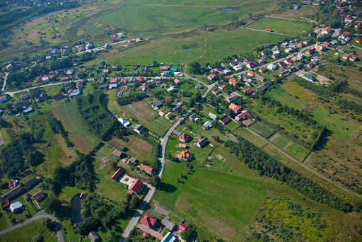
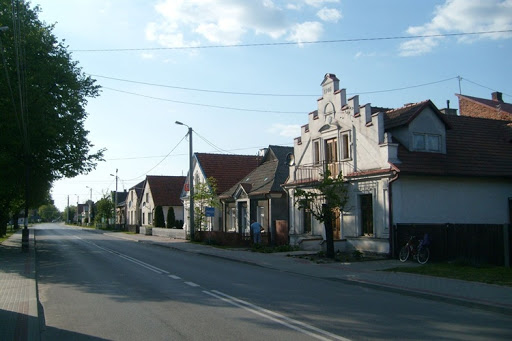

Radomyśl nad Sanem
Radomyśl nad Sanem (do końca 2001 Radomyśl) – wieś w Polsce, położona w województwie podkarpackim, w powiecie stalowowolskim, siedziba gminy Radomyśl nad Sanem. Leży niedaleko wideł Sanu i Wisły.
Miejscowość jest siedzibą gminy Radomyśl nad Sanem oraz rzymskokatolickiej parafii św. Jana Chrzciciela należącej do dekanatu Gorzyce.
Niegdyś było to prywatne miasto, uzyskało lokację miejską w 1581 roku. W 1935 nastąpiła utrata praw miejskich. Miejscowością partnerską jest niemieckie Waldbüttelbrunn.
W latach 1975–1998 miejscowość położona była w województwie tarnobrzeskim.


źrodło:
Wikipedia